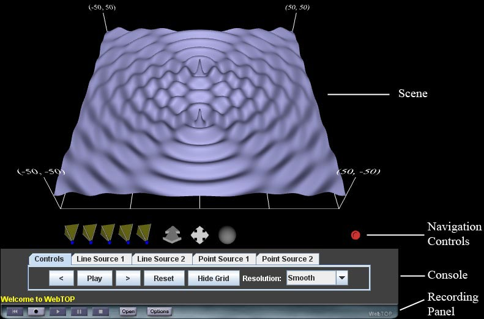
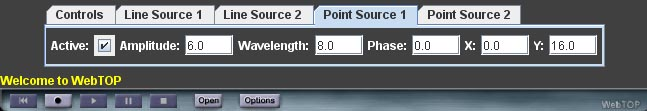
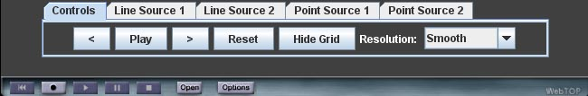

Waves: Directions
The default view for the WebTOP window looks like the following:

The WebTOP window has four parts. The top portion is the WebTOP Scene, which is the active simulation.
The second portion contains the WebTOP Navigation Controls, which allow you to
manipulate the scene. The third portion is the Console, which allows you to the
change parameter values used in the simulation and to control other features
of the simulation. The fourth portion is the
Recording Panel, which allows you to record and replay WebTOP sessions.
You may scroll down to read on, or select the appropriate link from the
following items:
How To Change Parameters
The parameters that can be changed are: (a) whether each of the four sources is active, and (b) the numerical values of the characteristics of each source.
Activating/Deactivating A Source
First, click on the tab with the source name on it, in order to gain access to the properties of that source. For example, if you start from the default situation and click on Point Source 1, you should see the following:

Currently, this source is active. To deactivate it, click on the Active box. To reactivate the source, click on the box again.
Changing the Amplitude of a Source
For a line source or a point source, the amplitude is changed by typing the desired value into the Amplitude number box. The allowed range of amplitude values is 0 to 10.
Changing the Wavelength of a Source
For a line source or a point source, the wavelength is changed by typing the desired value into the Wavelength number box. The allowed range of wavelength values is 3 to 50. (Wavelengths less than 3 lead to aliasing effects, even when the Very Smooth resolution setting is used.)
Changing the Phase of a Source
For a line source or a point source, the initial phase is changed by typing the desired value (in degrees) into the Phase number box. The allowed range of phase values is 0 to 360.
Changing the Phase of a Source
For a line source or a point source, the initial phase is changed by typing the desired value (in degrees) into the Phase number box. The allowed range of phase values is 0 to 360.
Changing the Angle of a Line Source
For a line source, the angle it travels, with respect to the positive x-axis, is changed by typing the desired value (in degrees) into the Angle number box. The allowed range of angle values is 0 to 360.
Changing the Position of a Point Source
The position of a point source is changed by typing the desired values into the X and Y number boxes. The allowed ranges of X and Y values are – 50 to 50.
Using the Controls
When the Controls tab is clicked on, you should see the following:

The Play/Stop button activates or stops the motion of the active sources. The Reset button resets all the parameters to their default values. The HideGrid/ShowGrid button hides or shows the outline for the grid of points being used in the simulation. The Resolution button allows the user to change the resolution being used in the simulation. The resolution choices are (in order of increasing resolution): Fastest, Fast, Medium, Smooth, and Very Smooth.
Back to Top
|